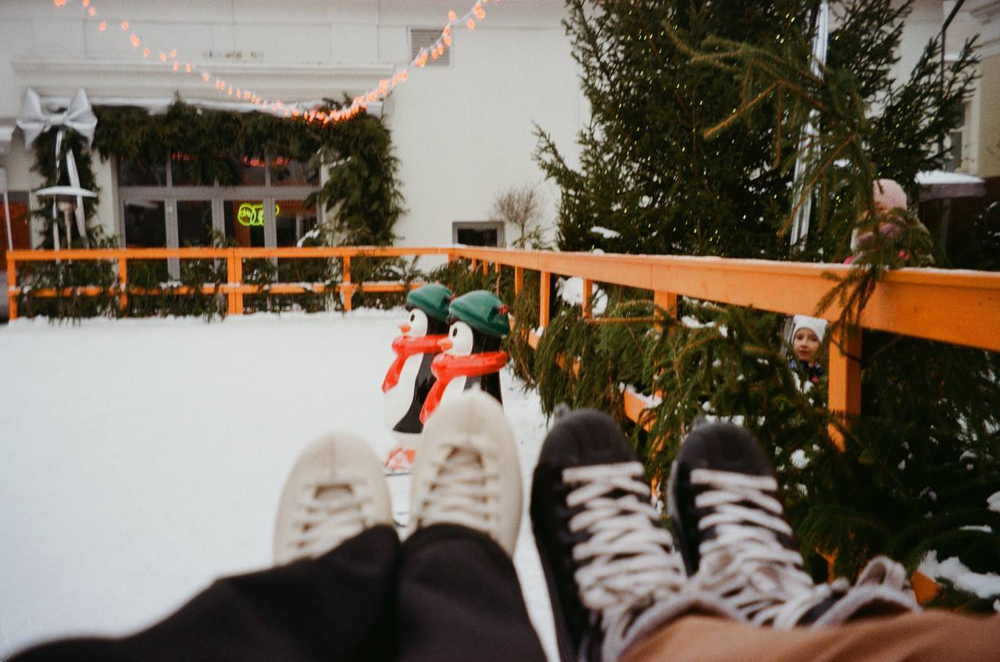
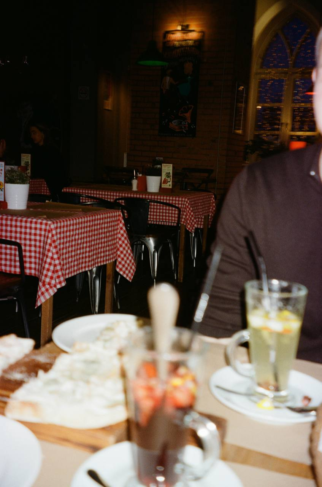

Начало конца эры джинс скини
Три с половиной года я шел за человеком который сам того не зная стал моим молнцем и маяком. По прошествию лет у нас появилась история и сейчас я ее расскажу.

Три с половиной года я шел за человеком который сам того не зная стал моим молнцем и маяком. По прошествию лет у нас появилась история и сейчас я ее расскажу.


«Я помню чудное мгновенье: передо мной явилась ты, как мимолетное виденье, как гений чистой красоты».
Эти строки я вспомнил в ту самую секунду, когда впервые увидел тебя. Тогда, еще не зная твоего голоса, твоего смеха, твоих привычек, я уже понял: это не просто случайность. Это — начало новой главы. Я еще не знал тебя, но сердце уже все решило: дальше — по-другому. Дальше — ярче, теплее и значительнее. Спасибо, что явилась мне не только как виденье, но и как сама жизнь.

На нашем пути встречались тупики и развилки. Было больно, было страшно, и иногда казалось, что лучше свернуть. Можно долго рассуждать о том, как было бы проще без этих испытаний, и в чем-то это чистая правда. Но я смотрю иначе: каждый камень на нашей дороге — это шаг, который мы сделали вместе. Мне нравится, что мы не сбежали от трудностей, а прожили их. Плечом к плечу. И это дорогого стоит